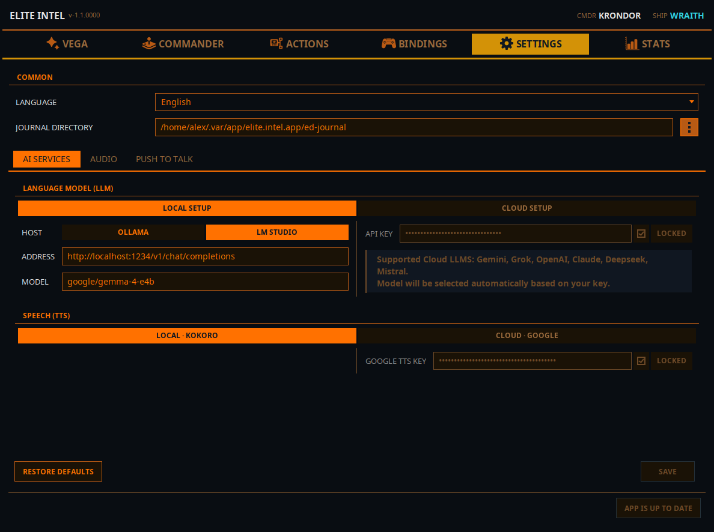
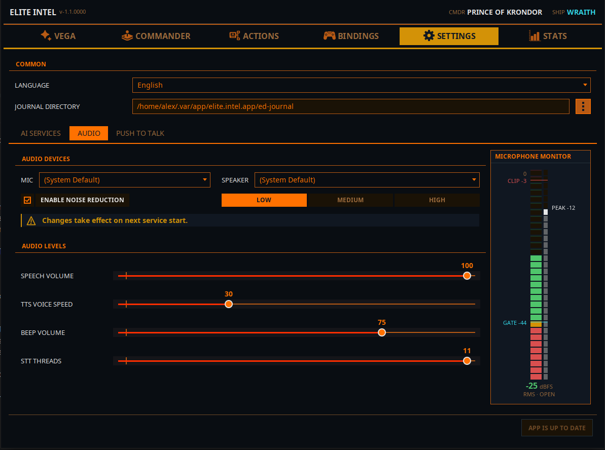
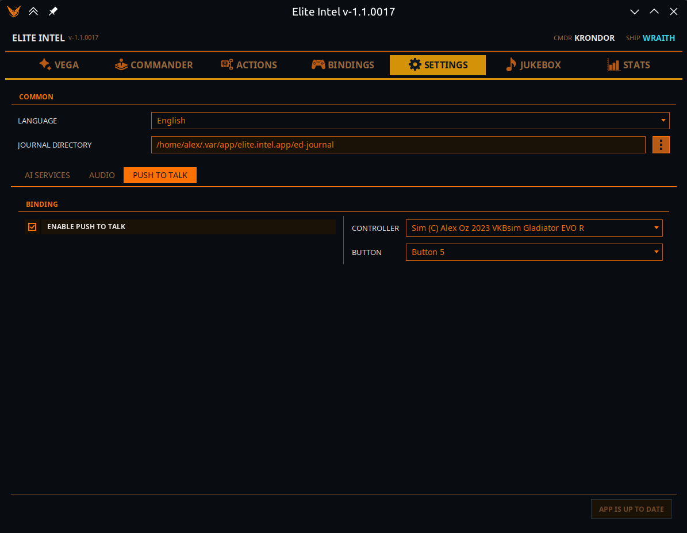

Pestaña Ajustes
 La fontanería. Una franja
General que se aplica en todas partes, y luego tres subpestañas: Servicios de IA, Audio
y Push To Talk.
La fontanería. Una franja
General que se aplica en todas partes, y luego tres subpestañas: Servicios de IA, Audio
y Push To Talk.
General
Se muestra encima de las subpestañas, porque se aplica a todas ellas.
Idioma: el idioma tanto de tus comandos de voz como de la propia interfaz de la aplicación. Elegir uno vuelve a renderizar toda la ventana de inmediato y Vega anuncia el cambio en voz alta.
Compatibles: inglés, español, francés, alemán, italiano, portugués, portugués de Brasil, ucraniano, ruso.
Directorio de Journal: donde Elite Dangerous escribe sus archivos de diario. Opcional: déjalo en blanco y se usa la ubicación estándar de tu plataforma. Así es como Elite Intel sabe qué ocurre alrededor de tu nave, de modo que si está mal la aplicación está efectivamente ciega, y lo dirá al arrancar.
Servicios de IA

Reescrito en V1.1. Las antiguas casillas «Usar» dispersas han desaparecido. Ahora hay dos conmutadores —uno para el modelo de lenguaje y otro para la voz— y el lado no usado de cada uno se atenúa, así que resulta obvio cuál está activo.
Es también la única pestaña de la aplicación que trabaja sobre un borrador. No se escribe nada hasta que pulsas Guardar, e intentar salir con ediciones sin guardar te pide Guardar, Descartar o Seguir editando.
Modelo de lenguaje (LLM)
Alterna entre Configuración local y Configuración en la nube.
Configuración local
| Campo | Notas |
|---|---|
| Host | Ollama o LM Studio. Cada uno conserva su propia dirección y modelo, así que puedes cambiar de uno a otro sin volver a escribir nada |
| Dirección | Por defecto, la URL habitual de ese host. Apúntala a la IP de otra máquina si la inferencia corre en otro punto de tu red |
| Modelo | El nombre del modelo. Un solo campo: V1.1 usa un único modelo para comandos y consultas |
El modelo local por defecto y recomendado es google/gemma-4-e4b. Elite Intel te avisa al
arrancar si tu modelo local es otro; otros modelos pueden funcionar mal o no funcionar en absoluto.
Guías de instalación: Ollama en Linux · Ollama en Windows · LM Studio en Linux · LM Studio en Windows · Serie AMD RX
Configuración en la nube
Un campo: tu Clave API, con una casilla Bloqueado al lado para que una clave guardada no se pueda editar por accidente. Desmarca Bloqueado para cambiarla.
Proveedores compatibles: Gemini, Grok, OpenAI, Claude, Deepseek, Mistral.
Ya no eliges modelo. Elite Intel reconoce el proveedor por la forma de tu clave y selecciona él mismo el modelo adecuado.
Mistral tiene un plan gratuito y es la forma más fácil de empezar. Consulta Opciones de LLM en la nube para saber cómo obtener una clave de cada proveedor.
Voz (TTS)
Alterna entre Local · Kokoro y Nube · Google.
- Local · Kokoro no tiene configuración alguna. 53 voces, integradas, sin clave y sin descarga.
- Nube · Google necesita una Clave de Google TTS, con la misma casilla Bloqueado.
Cambiar de motor restablece la voz de cada nave a la voz por defecto del nuevo motor. Las personalidades de las naves se conservan. Se te pide confirmación antes de que ocurra.
Pie
Restaurar valores predeterminados devuelve la configuración del modelo de lenguaje a LM Studio local con el modelo por defecto, y guarda de inmediato. Guardar confirma todo lo demás; está atenuado hasta que algo cambia de verdad, y entonces aparece a su lado el aviso Cambios sin guardar.
Guardar reinicia solo lo que hace falta: cambiar el modelo reinicia el cerebro, cambiar la clave de voz reinicia la boca.
Audio

Dispositivos de audio
Desplegables Mic. y Altavoz, o (Predeterminado del sistema). Los mismos selectores están disponibles desde el botón Dispositivos de audio de la pestaña Vega.
Los cambios de dispositivo surten efecto en el siguiente arranque de servicios.
Activar reducción de ruido con una intensidad Baja / Media / Alta. Empieza en Media. Alta es para salas realmente ruidosas: es agresiva, y filtrar de más puede costarte precisión en la transcripción.
Niveles de audio
| Deslizador | Qué hace |
|---|---|
| Volumen de voz | Lo alto que habla Vega |
| Velocidad de voz TTS | Lo rápido que habla Vega |
| Volumen de pitidos | El pitido de confirmación: suena cuando la transcripción ha terminado y el modelo de lenguaje ya tiene tu entrada |
| Hilos de STT | Hilos de CPU para la transcripción (4–11). Una petición mínima, no una reserva: la aplicación pide esta cantidad, usa lo que le da el procesador y los libera cuando termina el trabajo |
Monitor del micrófono
Un medidor en vivo en el lateral derecho. Hay tres cosas que leer en él:
- FLOOR: tu nivel de ruido cuando no estás hablando.
- GATE: el umbral. El audio por encima de la compuerta se transmite para transcribir; cuando cae por debajo, lo capturado se transcribe y se envía al modelo de lenguaje.
- CLIP: estás saturando el micrófono. Todo lo que quede por encima de esta línea se transcribe mal.
Quieres un hueco claro entre FLOOR y tu nivel al hablar, y que nada toque CLIP. Si no es lo que ves, ejecuta CALIBRAR AUDIO en la pestaña Vega: fija la compuerta por ti y te avisa si la diferencia entre voz y ruido es demasiado pequeña para trabajar.
Push To Talk

Pulsar para hablar funciona con un botón de mando o HOTAS, no de teclado. Cedes un botón y ganas un micrófono que está cerrado salvo cuando quieres tenerlo abierto.
| Control | Notas |
|---|---|
| Activar Push to Talk | El interruptor maestro. Todo lo demás está desactivado hasta que esté encendido |
| Controlador | Cualquier mando conectado que Elite Intel pueda ver. Vuelve a seleccionar automáticamente tu mando guardado cuando se reconecta |
| Botón | Qué botón de ese mando |
Dos modos:
- Alternar para dormir / despertar: el botón cambia a Vega entre dormida y escuchando. Mientras
duerme, Vega ignora todo salvo
Wake up!, y la palabra de pasolisten/listen upsigue colando un único comando: «Listen up — lower the landing gear.» - Push To Talk: Vega ignora todo por defecto. Mantén el botón, oye un pitido, habla, suelta. Un segundo pitido confirma que tu entrada se está procesando.
Mientras pulsar para hablar está activo, el botón Dormir / Despertar de la pestaña Vega queda desactivado: el botón del mando es la compuerta.
El botón funciona abras o no esta pestaña alguna vez.
Dónde viven los ajustes
Todos los ajustes y datos se guardan en una base de datos SQLite:
- Linux:
~/.local/share/elite-intel/elite-intel/db/ - Windows:
%APPDATA%\elite-intel\db\
Community 👉Matrix👈